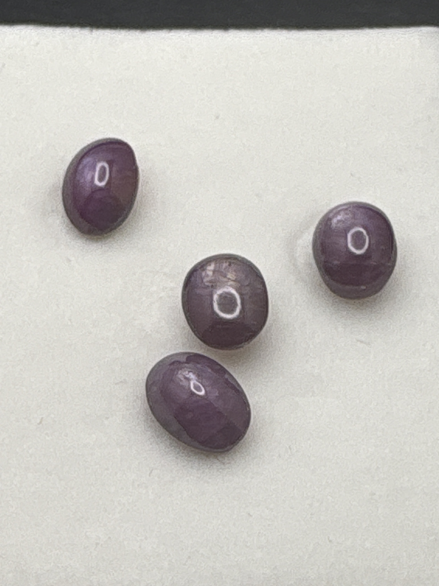

The Gem Drawer › No. 106

Four cabochons labeled star ruby that photograph lavender-mauve, star unclear.
| Catalogue no. | #106 |
|---|---|
| As labeled | Labeled "African Star Ruby" - COLOR/ASTERISM MISMATCH (stones appear lavender/purple, not red, and star effect unclear) - SET OF FOUR cabochons - see notes |
| Shape / cut | Cabochon (all four) |
| Weight | 1.50 (label is singular; likely combined/approximate for the set of 4, see notes) |
| Measurements | Not recorded |
| Colour | Lavender / purple-mauve as photographed (label states red "ruby" - see mismatch note) |
| Clarity / condition | Not recorded |
Interested in this stone, or in the collection as a whole? Terry VanWormer can answer questions about it.
Click here to inquireor email Terry directly at maxrebo34@gmail.com